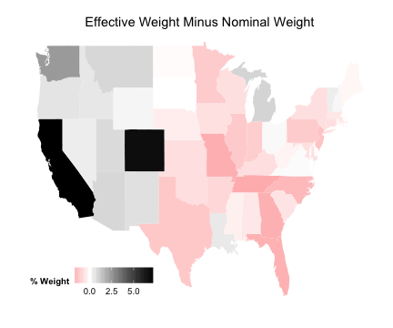
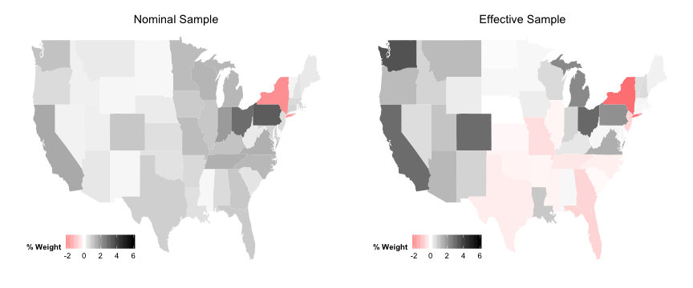

Sensitivity and Effective Samples
Drew Dimmery drewd at nyu dot edu
February 14, 2014
Plan for today
First homework
Some issues with identification / estimation
Second homework
Effective Samples in regression
Confounding & Sensitivity Analysis
Imbens (2003)
And generalizations (which are easy)
Identification / Estimation
The "Four questions" may have been a little confusing.
Let me re-break down the last two questions as "Identification" and "Estimation"
"A regression is causal when the CEF it approximates is causal" - MHE
Identification consists (in this context) as the set of things you need to believe in order to believe the CEF is causal.
Thus, when we think about identification, we should think about assumptions.
Estimation is the process you use to estimate the CEF.
In practice
The Conditional Independence Assumption would fall in identification.
I'd also throw in assumptions of additivity / linearity in this pot.
Estimation would include the populations/samples of interest, and all statistical inference.
But there's a close connection between the two.
Problems in estimation can lead to changes in identifying assumptions.
So they aren't completely separable.
Basic Identities and Definitions
Convergence in probability:\(X_n\,{\buildrel p \over \to}\,X \text{ if } \forall \epsilon > 0 \quad \Pr(|X_n - X| > \epsilon) \to 0\text{ as }n \to \infty\)
A very basic decomposition of variance:\(\text{var}(X)=E[X^2]-E[X]^2\)
Something we do NOT know: \(E[XY]=E[X]\times E[Y]\)
Pretty much everybody assumed this to be true.
Problem Set 2
We want to find the probability limit of \({D_d'D_d \over N}\)
Pretty much everyone correctly observed that this was:\[\begin{pmatrix}
\frac{1}{N}\sum_i (X_i - \bar{X})^2 & \frac{1}{N}\sum_i (X_i - \bar{X})(Z_i - \bar{Z}) \\
\frac{1}{N}\sum_i (X_i - \bar{X})(Z_i - \bar{Z}) & \frac{1}{N}\sum_i (Z_i - \bar{Z})^2
\end{pmatrix}\]
We can't simply say that this is equal to the following, though:\[\begin{pmatrix}
\frac{1}{N}\sum_i (X_i - p)^2 & \frac{1}{N}\sum_i (X_i - p)(Z_i - q) \\
\frac{1}{N}\sum_i (X_i - p)(Z_i - q) & \frac{1}{N}\sum_i (Z_i - q)^2
\end{pmatrix}\]
This is a fact which you should all be able to recognize as false IMMEDIATELY.
Continued
The sample variance is BIASED when divided by \(N\) rather than \(N-1\) .
It is still consistent, though, which is what is relevant to us.
The simple proof is as follows:\({\sum_i (X_i - \bar{X})^2 \over N} = \frac{1}{N} \left( \sum_i X_i^2 - 2 \sum_i \bar{X}X_i + \sum_i \bar{X}^2\right)\)
We can pull out constants from the sums:\(\frac{1}{N}\left(\sum_i X_i^2 - 2\bar{X}\sum_i X_i + \bar{X}^2 \sum_i 1 \right)\)
And simplify some things:\(\frac{\sum_i X_i^2}{N} - 2\bar{X}^2 + \bar{X}^2 = \frac{\sum_i X_i^2}{N} - \frac{\sum_i \bar{X}^2}{N}\)
This is the point at which we can use the LLN. Averages converge in probability to their expectations.\(E[X^2]-E[\bar{X}^2]\)
Use this identity: \(E[Z^2] = E[Z]^2+\text{var}(Z)\)
Which gives us: \(E[X]^2+\text{var}(X)\) and \(E[\bar{X}]^2+\text{var}(\bar{X})\)
Substituting in these identities:\(E[X]^2+\text{var}(X)-E[\bar{X}]^2-\text{var}(\bar{X})\)
Which gives us: \(p^2+p(1-p)-p^2-\frac{p(1-p)}{N} = \frac{N-1}{N}p(1-p)\)
Which converges in probability to \(p(1-p)\) (i.e. it is consistent)
Finishing it up:
After that there weren't many issues
We know off-diagonals are zero because \(X\) and \(Z\) are independent.
This means we have a diagonal matrix, which is easy to invert (just take the inverse of the diagonal elements)
We then use a similar method to find \(D_d'Y\) , and multiply them together, which completes the first part.
For the next part, observe that we know \(\text{var}(X_i)=p(1-p)\) , so we only need to think about the expectation of the numerator.
We end up with the following:\(\text{cov}(X,Y)=E[XY]-E[X]E[Y] = E[Y|X=1]p(X=1)-pE[Y]\)
We then use the law of total probability on \(E[Y]\) :\(pE[Y|X=1] - p(pE[Y|X=1] + (1-p)E[Y|X=0])\)
Distribute and collect terms:\(p(1-p)\left( E[Y|X=1] - E[Y|X=0]\right)\)
By random assignment of X, we have:\(p(1-p)\left( E[Y_1 - Y_0] \right)\)
So dividing by \(p(1-p)\) will leave us with \(\rho\)
Effective Samples
We're going to be investigating how to check the properties of your effective sample in regression.
The key result is:\(\hat{\rho}_{reg}\,{\buildrel p \over \to}\,\frac{E[w_i \rho_i]}{E[w_i]} \text{ where } w_i = \text{var}(D_i | X_i)\)
We estimate these weights with:\(\hat{w}_i = \hat{D}_i^2\) where \(D_i^2\) is the \(i\) th squared residual.
Because these estimates are "bad" for each unit, using them to reweight the sample is a bad idea.
Instead, we just use them to get a sense for what the effective sample is by examining the weight allocated to particular strata.
We will now explore how to do this.
Example paper
We will be looking at Egan and Mullin (2012)
This paper explores the effect of local weather variations on belief in global warming.
Very cool paper! With an interesting randomized treatment.
But what is the effective sample?
In other words, where is weather (conditional on covariates) most variable?
That's what we'll explore.
Load in data
require (foreign)
d <- read.dta ("gwdataset.dta" )## Warning: value labels ('q2') for 'jan07_q2' are missingzips <- read.dta ("zipcodetostate.dta" )
zips <- unique (zips[, c ("statenum" , "statefromzipfile" )])
pops <- read.csv ("population_ests_2013.csv" )
pops$state <- tolower (pops$NAME)
d$getwarmord <- as.double (d$getwarmord)
# And estimate primary model of interest:
out <- lm (getwarmord ~ ddt_week + educ_hsless + educ_coll + educ_postgrad +
educ_dk + party_rep + party_leanrep + party_leandem + party_dem + male +
raceeth_black + raceeth_hisp + raceeth_notwbh + raceeth_dkref + age_1824 +
age_2534 + age_3544 + age_5564 + age_65plus + age_dk + ideo_vcons + ideo_conservative +
ideo_liberal + ideo_vlib + ideo_dk + attend_1 + attend_2 + attend_3 + attend_5 +
attend_6 + attend_9 + as.factor (doi) + as.factor (statenum) + as.factor (wbnid_num),
d)
# And partial regression:
Base Model
We won't worry about standard errors yet.
summary (out)$coefficients[1 :10 , ]## Estimate Std. Error t value Pr(>|t|)
## (Intercept) 1.945740 0.771479 2.5221 1.169e-02
## ddt_week 0.004858 0.002476 1.9621 4.980e-02
## educ_hsless 0.057740 0.024484 2.3583 1.839e-02
## educ_coll 0.021457 0.027095 0.7919 4.284e-01
## educ_postgrad 0.049387 0.030734 1.6069 1.081e-01
## educ_dk 0.102936 0.250495 0.4109 6.811e-01
## party_rep -0.243900 0.036627 -6.6591 2.992e-11
## party_leanrep -0.092809 0.041812 -2.2197 2.648e-02
## party_leandem 0.147409 0.039024 3.7774 1.600e-04
## party_dem 0.175427 0.035267 4.9743 6.725e-07
Estimate D^2
We can simply square the residuals of a partial regression to get \(D^2\) :
outD <- lm (ddt_week ~ educ_hsless + educ_coll + educ_postgrad + educ_dk + party_rep +
party_leanrep + party_leandem + party_dem + male + raceeth_black + raceeth_hisp +
raceeth_notwbh + raceeth_dkref + age_1824 + age_2534 + age_3544 + age_5564 +
age_65plus + age_dk + ideo_vcons + ideo_conservative + ideo_liberal + ideo_vlib +
ideo_dk + attend_1 + attend_2 + attend_3 + attend_5 + attend_6 + attend_9 +
as.factor (doi) + as.factor (statenum) + as.factor (wbnid_num), d)
D2 <- residuals (outD)^2
Effective Sample Statistics
We can use these estimated weights for examining the sample.
compare_samples <- d[, c ("wave" , "ddt_week" , "ddt_twoweeks" , "ddt_threeweeks" ,
"party_rep" , "attend_1" , "ideo_conservative" , "age_1824" , "educ_hsless" )]
compare_samples <- apply (compare_samples, 2 , function(x) c (mean (x), sd (x), weighted.mean (x,
D2), sqrt (weighted.mean ((x - weighted.mean (x, D2))^2 , D2))))
compare_samples <- t (compare_samples)
colnames (compare_samples) <- c ("Nominal Mean" , "Nominal SD" , "Effective Mean" ,
"Effective SD" )
compare_samples## Nominal Mean Nominal SD Effective Mean Effective SD
## wave 3.09694 1.4253 3.20788 1.5609
## ddt_week 3.83549 5.9047 5.11579 10.8980
## ddt_twoweeks 3.85506 5.4572 5.00137 9.2263
## ddt_threeweeks 3.96720 4.7690 5.10859 8.4348
## party_rep 0.29527 0.4562 0.28978 0.4537
## attend_1 0.11433 0.3182 0.12343 0.3289
## ideo_conservative 0.31133 0.4631 0.29325 0.4553
## age_1824 0.07196 0.2584 0.06881 0.2531
## educ_hsless 0.34151 0.4743 0.31220 0.4634
Effective Sample Maps
But one of the most interesting things is to see this visually.
Where in the US does the effective sample emphasize?
To get at this, we'll use some tools in R that make this incredibly easy.
In particular, we'll do this in ggplot2.
# Effective sample by state
wt.by.state <- tapply (D2, d$statenum, sum)
wt.by.state <- wt.by.state/sum (wt.by.state) * 100
wt.by.state <- cbind (D2 = wt.by.state, statenum = names (wt.by.state))
data_for_map <- merge (wt.by.state, zips, by = "statenum" )
# Nominal Sample by state
wt.by.state <- tapply (rep (1 , 6726 ), d$statenum, sum)
wt.by.state <- wt.by.state/sum (wt.by.state) * 100
wt.by.state <- cbind (Nom = wt.by.state, statenum = names (wt.by.state))
data_for_map <- merge (data_for_map, wt.by.state, by = "statenum" )
# Get correct state names
require (maps, quietly = TRUE )
data (state.fips)
data_for_map <- merge (state.fips, data_for_map, by.x = "abb" , by.y = "statefromzipfile" )
data_for_map$D2 <- as.double (as.character (data_for_map$D2))
data_for_map$Nom <- as.double (as.character (data_for_map$Nom))
data_for_map$state <- sapply (as.character (data_for_map$polyname), function(x) strsplit (x,
":" )[[1 ]][1 ])
data_for_map$Diff <- data_for_map$D2 - data_for_map$Nom
data_for_map <- merge (data_for_map, pops, by = "state" )
data_for_map$PopPct <- data_for_map$POPESTIMATE2013/sum (data_for_map$POPESTIMATE2013) *
100
data_for_map$PopDiffEff <- data_for_map$D2 - data_for_map$PopPct
data_for_map$PopDiffNom <- data_for_map$Nom - data_for_map$PopPct
data_for_map$PopDiff <- data_for_map$PopDiffEff - data_for_map$PopDiffNom
require (ggplot2, quietly = TRUE )
state_map <- map_data ("state" )
More setup
plotEff <- ggplot (data_for_map, aes (map_id = state))
plotEff <- plotEff + geom_map (aes (fill = D2), map = state_map)
plotEff <- plotEff + expand_limits (x = state_map$long, y = state_map$lat)
plotEff <- plotEff + scale_fill_continuous ("% Weight" , limits = c (0 , 16 ), low = "white" ,
high = "black" )
plotEff <- plotEff + labs (title = "Effective Sample" )
plotEff <- plotEff + theme (legend.position = c (0.2 , 0.1 ), legend.direction = "horizontal" ,
axis.line = element_blank (), axis.text = element_blank (), axis.ticks = element_blank (),
axis.title = element_blank (), panel.background = element_blank (), plot.background = element_blank (),
panel.border = element_blank (), panel.grid = element_blank ())
plotNom <- ggplot (data_for_map, aes (map_id = state))
plotNom <- plotNom + geom_map (aes (fill = Nom), map = state_map)
plotNom <- plotNom + expand_limits (x = state_map$long, y = state_map$lat)
plotNom <- plotNom + scale_fill_continuous ("% Weight" , limits = c (0 , 16 ), low = "white" ,
high = "black" )
plotNom <- plotNom + labs (title = "Nominal Sample" )
plotNom <- plotNom + theme (legend.position = c (0.2 , 0.1 ), legend.direction = "horizontal" ,
axis.line = element_blank (), axis.text = element_blank (), axis.ticks = element_blank (),
axis.title = element_blank (), panel.background = element_blank (), plot.background = element_blank (),
panel.border = element_blank (), panel.grid = element_blank ())
And the maps
require (gridExtra, quietly = TRUE )
grid.arrange (plotNom, plotEff, ncol = 2 )
Setup Comparison Plot
plotDiff <- ggplot (data_for_map, aes (map_id = state))
plotDiff <- plotDiff + geom_map (aes (fill = Diff), map = state_map)
plotDiff <- plotDiff + expand_limits (x = state_map$long, y = state_map$lat)
plotDiff <- plotDiff + scale_fill_gradient2 ("% Weight" , low = "red" , mid = "white" ,
high = "black" )
plotDiff <- plotDiff + labs (title = "Effective Weight Minus Nominal Weight" )
plotDiff <- plotDiff + theme (legend.position = c (0.2 , 0.1 ), legend.direction = "horizontal" ,
axis.line = element_blank (), axis.text = element_blank (), axis.ticks = element_blank (),
axis.title = element_blank (), panel.background = element_blank (), plot.background = element_blank (),
panel.border = element_blank (), panel.grid = element_blank ())
Difference in Weights
plotDiff

Population Comparison
plotEff <- ggplot (data_for_map, aes (map_id = state))
plotEff <- plotEff + geom_map (aes (fill = PopDiffEff), map = state_map)
plotEff <- plotEff + expand_limits (x = state_map$long, y = state_map$lat)
plotEff <- plotEff + scale_fill_gradient2 ("% Weight" , limits = c (-2 , 6 ), low = "red" ,
mid = "white" , high = "black" )
plotEff <- plotEff + labs (title = "Effective Sample" )
plotEff <- plotEff + theme (legend.position = c (0.2 , 0.1 ), legend.direction = "horizontal" ,
axis.line = element_blank (), axis.text = element_blank (), axis.ticks = element_blank (),
axis.title = element_blank (), panel.background = element_blank (), plot.background = element_blank (),
panel.border = element_blank (), panel.grid = element_blank ())
plotNom <- ggplot (data_for_map, aes (map_id = state))
plotNom <- plotNom + geom_map (aes (fill = PopDiffNom), map = state_map)
plotNom <- plotNom + expand_limits (x = state_map$long, y = state_map$lat)
plotNom <- plotNom + scale_fill_gradient2 ("% Weight" , limits = c (-2 , 6 ), low = "red" ,
mid = "white" , high = "black" )
plotNom <- plotNom + labs (title = "Nominal Sample" )
plotNom <- plotNom + theme (legend.position = c (0.2 , 0.1 ), legend.direction = "horizontal" ,
axis.line = element_blank (), axis.text = element_blank (), axis.ticks = element_blank (),
axis.title = element_blank (), panel.background = element_blank (), plot.background = element_blank (),
panel.border = element_blank (), panel.grid = element_blank ())
Population Comparison Plots
grid.arrange (plotNom, plotEff, ncol = 2 )

Setup New Comparison Plot
plotDiff <- ggplot (data_for_map, aes (map_id = state))
plotDiff <- plotDiff + geom_map (aes (fill = PopDiff), map = state_map)
plotDiff <- plotDiff + expand_limits (x = state_map$long, y = state_map$lat)
plotDiff <- plotDiff + scale_fill_gradient2 ("% Weight" , low = "red" , mid = "white" ,
high = "black" )
plotDiff <- plotDiff + labs (title = "Effective Weight Minus Nominal Weight" )
plotDiff <- plotDiff + theme (legend.position = c (0.2 , 0.1 ), legend.direction = "horizontal" ,
axis.line = element_blank (), axis.text = element_blank (), axis.ticks = element_blank (),
axis.title = element_blank (), panel.background = element_blank (), plot.background = element_blank (),
panel.border = element_blank (), panel.grid = element_blank ())
Plot Difference
plotDiff
Sensitivity Analysis
The homework mentions a couple places to find pre existing code.
I'm going to walk you through how to do a generalized version of the Imbens (2003) method.
It may be easier to use one of the canned routines for your homework, though.
We're going to keep working with Pat's data, since we already have it handy.
Imbens process:
Simulate (or imagine simulating) an unobserved confounder like the following:\(Y_d | X, U \sim \mathcal{N}(\tau d + \boldsymbol\beta'X + \delta U, \sigma^2)\) \(D | X, U \sim f(\boldsymbol\gamma'X + \alpha U)\) (with \(f\) known)
That is, \(Y_1, Y_0 \perp D | X, U\)
So we want to generate an additively linear confounder with both \(D\) and \(Y\) .
Generate a confounder
For our analysis, \(Y\) is belief in global warming and \(D\) is local variation in temperature.
We want to standardize these variables first.
d$getwarmord <- scale (d$getwarmord)
d$ddt_week <- scale (d$ddt_week)
genConfound <- function(alpha, delta) {
e <- rnorm (nrow (d), 0 , 1 )
U <- alpha * d$ddt_week + delta * d$getwarmord + e
return (U)
}
So we can vary partial correlations with \(D\) and \(Y\) by varying alpha and delta.
U1 <- genConfound (0 , 2 )
U2 <- genConfound (10 , 10 )
c (D = cor (U1, d$ddt_week), Y = cor (U1, d$getwarmord))## D Y
## 0.0305 0.8913c (D = cor (U2, d$ddt_week), Y = cor (U2, d$getwarmord))## D Y
## 0.7192 0.7208X <- "educ_hsless+educ_coll+educ_postgrad+educ_dk+party_rep+party_leanrep+party_leandem+party_dem+male+raceeth_black+raceeth_hisp+raceeth_notwbh+raceeth_dkref+age_1824+age_2534+age_3544+age_5564+age_65plus+age_dk+ideo_vcons+ideo_conservative+ideo_liberal+ideo_vlib+ideo_dk+attend_1+attend_2+attend_3+attend_5+attend_6+attend_9+as.factor(doi)+as.factor(statenum)+as.factor(wbnid_num)"
c (D = coef (lm (paste0 ("ddt_week~U1+" , X), d))["U1" ], Y = coef (lm (paste0 ("getwarmord~U1+" ,
X), d))["U1" ])## D.U1 Y.U1
## 0.005302 0.388986c (D = coef (lm (paste0 ("ddt_week~U2+" , X), d))["U2" ], Y = coef (lm (paste0 ("getwarmord~U2+" ,
X), d))["U2" ])## D.U2 Y.U2
## 0.03226 0.06704
Continued
More importantly, we can see how this changes our estimate of the treatment effect:
out <- lm (paste0 ("getwarmord~ddt_week+" , X), d)
coef (out)["ddt_week" ]## ddt_week
## 0.03618coef (lm (paste0 ("getwarmord~ddt_week+U1+" , X), d))["ddt_week" ]## ddt_week
## 0.01399coef (lm (paste0 ("getwarmord~ddt_week+U2+" , X), d))["ddt_week" ]## ddt_week
## -0.9855
Now we want to do this over a larger number of values of alpha and delta
alphas <- rnorm (1000 , 0 , 0.5 )
deltas <- rnorm (1000 , 0 , 0.5 )
results <- NULL
for (i in seq_len (length (alphas))) {
U <- genConfound (alphas[i], deltas[i])
corD <- cor (U, d$ddt_week)
corY <- cor (U, d$getwarmord)
estTE <- coef (lm (paste0 ("getwarmord~ddt_week+U+" , X), d))["ddt_week" ]
names (estTE) <- NULL
res <- c (estTE = estTE, corD = corD, corY = corY)
results <- rbind (results, res)
}
results <- cbind (results, TEchange = (results[, "estTE" ] - coef (out)["ddt_week" ]))
Plot Simulation Code
color <- ifelse (results[, "estTE" ] <= 0.5 * coef (out)["ddt_week" ], "red" , NA )
color <- ifelse (is.na (color) & results[, "estTE" ] >= 1.5 * coef (out)["ddt_week" ],
"blue" , color)
color <- ifelse (is.na (color), "green" , color)
plot (results[, "corD" ], results[, "corY" ], col = color, xlab = "correlation with D" ,
ylab = "correlation with Y" , xlim = c (-1 , 1 ), ylim = c (-1 , 1 ))
vars <- strsplit (X, "[+]" , perl = TRUE )[[1 ]]
vars <- vars[grep ("factor" , vars, invert = TRUE )]
for (v in vars) {
corD <- with (d, cor (get (v), d$ddt_week))
corY <- with (d, cor (get (v), d$getwarmord))
points (corD, corY, pch = "+" , col = "black" )
}
abline (v = 0 , col = "grey" , lty = 3 )
abline (h = 0 , col = "grey" , lty = 3 )